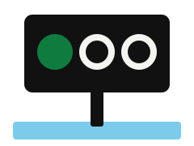

Loud market. Cold read: hold, don't buy. One check of three passed, and three accounts did 96.6% of it.
Short, dry, blunt about the data. Never mocks the reader or other projects.Does public data support holding NEAR through 2031?
Hold. Don't buy. Through 2031.
The one pass leans on three accounts: 96.6% of it. Without them, 2.66%.
Show me the receiptsGeneral research opinion, not personal advice.